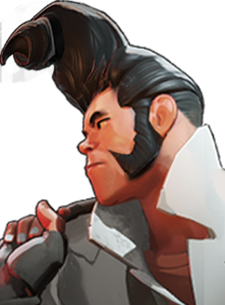
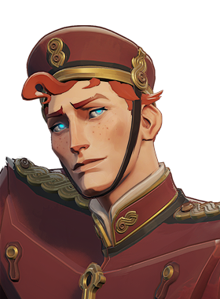
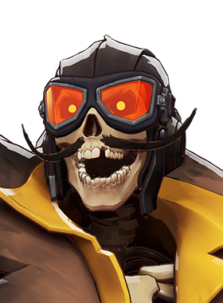
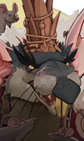
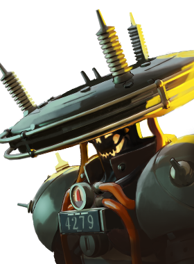
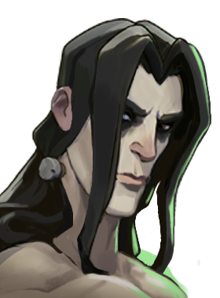
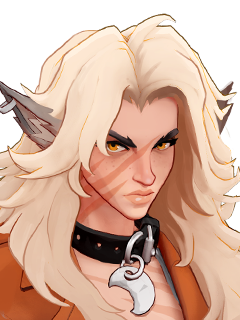

Assassina de mobilidade com foco em causar dano contínuo.
História
Quando se trata de infringir a lei, não ser pego é uma parte muito importante do trabalho. Vyper nunca recebeu esse memorando. Felizmente para ela, se há uma coisa em que ela é melhor do que ser presa, é escapar da prisão.
Tendo cumprido pena em todas as principais prisões da área dos três estados, Vyper construiu uma rede impressionante de bandidos de rua que lhe devem uma. Ela também construiu uma rede impressionante de bandidos de rua que a querem morta, mas ela tenta se concentrar no positivo.
História oficial do jogo, traduzida automaticamente para o português.
Números reais
Habilidades
Lança uma adaga que causa dano espiritual e retarda o alvo; acertos repetidos no mesmo alvo acumulam dano e lentidão.
Injeta veneno num alvo que dispara após um tempo causando dano espiritual, maior quanto menos vida o alvo tiver.
Aumenta a distância do deslize, deixa Vyper subir ladeiras deslizando e melhora a curva; níveis maiores dão uma barreira ao deslizar.
Lança uma bola explosiva que retarda e fere inimigos na área; acertos diretos petrificam o alvo, bloqueando dano e impedindo ações.
Builds mais usadas
2.930 partidas registradas com esta build.
Perto (800) · Regeneração Extra (800) · Rodadas de alta velocidade (800) · Grão (800) · Rodadas de Abertura (1.600) · Rodadas rápidas (800) · Balas Tesla (3.200) · Recarga Mercúrio (1.600) · Explosão de fogo (3.200) · Tiro dividido (1.600)
2.095 partidas registradas com esta build.
Perto (800) · Espírito Extra (800) · Recarga Mercúrio (1.600) · Triturador resistente a balas (1.600) · Espírito Melhorado (1.600) · Regeneração Extra (800) · Rito de Cura (800) · Hex retardado (1.600) · Maior Expansão (3.200) · Balas Tesla (3.200)
1.504 partidas registradas com esta build.
Rodadas Monstruosas (800) · Perto (800) · Espírito Extra (800) · Grão (800) · Recarga Ativa (1.600) · Rodadas rápidas (800) · Tiro dividido (1.600) · Blindagem Espiritual (1.600) · Explosão de fogo (3.200) · Maestria de Vigor (3.200)
Confrontos reais

Shiv — 54.3% de vitória- Pocket — 53.3% de vitória
- Paradox — 53.3% de vitória
- Mirage — 53.2% de vitória

The Doorman — 52.3% de vitória
Deadman Danny — 52.3% de vitória
- Graves — 40.5% de vitória

Rat King — 41.4% de vitória- Paige — 41.5% de vitória

Seven — 43.3% de vitória
Victor — 43.8% de vitória- Dynamo — 44.5% de vitória
O que upar primeiro
Nível por nível, na ordem que os jogadores mais usam em partidas de verdade. A porcentagem mostra quantos escolheram aquela habilidade naquele nível.
Melhores duplas
Heróis que mais ganham jogando junto com ele, em partidas reais (pelo menos 1.500 partidas juntos).
- Paige56,0%
- Rat King55,3%
- Graves54,0%
- Seven53,7%
- Victor52,8%
- Shiv42,6%
- Grey Talon43,2%

Silver43,3%
Histórico de win rate
07/09: 48.7% → 26/10: 48.2% → 14/12: 47.8% → 01/02: 46.5% → 22/03: 47.3% → 10/05: 48.2% → 28/06: 47.3% → 16/08: 50.4% → 04/10: 47.7%